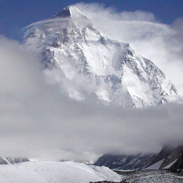
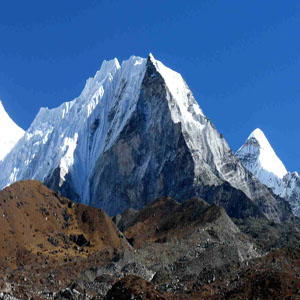
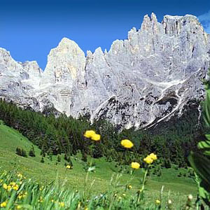
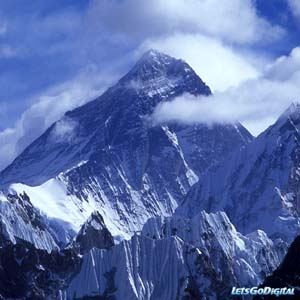

quien soy
biografia
curriculum
que ofrezco
servicios
carteles
ejemplo 1
ejemplo 2
ejemplo 3
newsletter
ejemplo 1
ejemplo 2
ejemplo 3
folletos y libros
![]()
Everest
- 
Mont Blanc
- 
k2
- 
Aneto
- 
Montañas Rocosas
Himalay
contenido para redes sociales
ejemplo 1
ejemplo 2
ejemplo 3
contacto
Calisto (del griego Καλλιστώ) es un satélite del planeta Júpiter, descubierto en 1610 por Galileo Galilei. Es el tercer satélite más grande del Sistema Solar y el segundo del sistema joviano, después de Ganímedes. Calisto tiene aproximadamente el 99% del diámetro del planeta Mercurio, pero sólo un tercio de su masa. Es el cuarto satélite galileano en cuanto a distancia a Júpiter, con un radio orbital de 1 880 000 kilómetros
. No está influido por la resonancia orbital que afecta a los tres satélites galileanos interiores: Ío, Europa y Ganímedes; por lo que no sufre un calentamiento apreciable por fuerzas de marea, como sí ocurre en los otros tres. Calisto tiene una rotación síncrona, es decir, su período de rotación concuerda con su período orbital, de manera que, igual que la Luna con la Tierra, siempre «muestra» la misma cara a Júpiter. La superficie de Calisto no está tan influida por la magnetosfera de Júpiter como la de los otros satélites interiores ya que su órbita es más lejana.